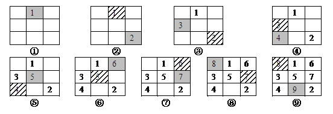
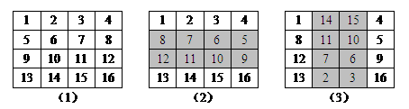
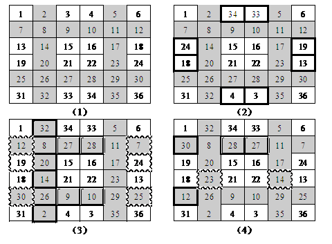

由n*n个数字所组成的n阶方阵，若具有各对角线、各横列与纵行的数字和都相等的性质，则称为魔方阵。这个相等的和称为魔术数字。若填入的数字是从1到n*n，称此种魔方阵为n阶正规魔方阵。
如下所示为一个3阶魔方阵和一个四阶魔方阵。
魔方阵的构建方法很多，一般将n分为三类，这三类n构成的魔方阵的算法各不相同。
（1）当n为奇数，即n=2*k+1时，常采用简捷连续填数法。
（2）当n为单偶数（n是偶数，但又不能被4整除），即n=4*k+2时，常采用井字调整法。
（3）当n为双偶数（n能被4整除），即n=4*k时，常采用双向翻转法。
奇数阶魔方阵的构造方法为：
首先把1放到顶行的正中间，然后把后继数按顺序放置在右上斜的对角线上，并作如下修改：
（1）当到达顶行时，下一个数放到底行，好像它在顶行的上面；
（2）当到达最右端列时，下一个数放在最左端列，好像它紧靠在右端列的右方；
（3）当到达的位置已经填好数时，或到达右上角的位置时，下一个数就放在刚填写数的位置的正下方。
下面以构造一个3阶魔方阵为例，说明这种方法的构造过程，具体如图1所示。

图1 简捷连续填数法构造3阶魔方阵
程序中定义一个二维数组a[N][N]来保存方阵，初始时，数组中所有元素均置0。
用变量row和col来存储待填数字num在方阵中的位置，由于第1个数字放在顶行的正中间，因此初始时，行row=0，列col=n/2，待填写数字num=1。
采用简捷连续填数法构造方阵的过程是一个循环程序，描述为：
While (待填写数字num<=n*n)
{
确定待填写数字num应该填写的位置row和col；
填写num，即a[row][col]=num;
Num++； // 下一个待填写的数字
}
程序中，确定待填写位置的方法是：
（1）后继数按顺序放置在右上斜的对角线上，即row--； col++；
（2）有三种情形需要调整。
当到达顶行时（即row<0）， row=n-1;
当到达最右端列时（即col==n）， col=0;
当到达的位置已经填好数时（即(a[row][col]!=0)， row+=2; col--;
（3）有一种情况，当到达右上角的位置时（row==0 && col==n-1），直接进行特殊处理，row++ 。
#include <iostream>
#include <iomanip>
using namespace std;
int main()
{
int a[9][9],row,col,num,n;
cin>>n;
for (row=0;row<n;row++) // 初始化，数组中所有元素均置0
for (col=0;col<n;col++)
a[row][col]=0;
row=0; col=n/2; num=1;
a[row][col]=num;
while (num<n*n)
{
num++;
if (row==0 && col==n-1) // 到达右上角的位置
row++;
else
{
row--; col++;
if (row<0) row=n-1;
if (col==n) col=0;
if (a[row][col]!=0)
{ row+=2; col--; }
}
a[row][col]=num;
}
for (row=0;row<n;row++)
{
for (col=0;col<n;col++)
cout<<setw(4)<<a[row][col]<<" ";
cout<<endl;
}
return 0;
}
当n为双偶数，即n=4*k时，采用双向翻转法。双向翻转法构造魔方阵的步骤如下：
（1）将数字1到n*n按由左至右、由上到下的顺序填入方阵中。
（2）将方阵中央部分半数的行中的所有数字左右翻转。
（3）将方阵中央部分半数的列中的所有数字上下翻转。
由于在构造的过程中需要进行两次翻转，因此称为双向翻转法。下面以构造一个4阶魔方阵为例，说明这种方法的构造过程，具体如图2所示。

图2 双向翻转法构造4阶魔方阵
程序中定义一个二维数组a[N][N]来保存方阵，构造时，依次进行三个二重循环。
（1）将数字1到n*n按由左至右、由上到下的顺序填入方阵中
num=1;
for (row=0; row<n; row++)
for (col=0; col<n; col++)
a[row][col] = num++;
（2）将方阵中央部分半数的行中的所有数字左右翻转
对于一个n=4*k阶的双偶数方阵，若按行分成四组的话，每组行号的范围为0~k-1、k~2k-1、2k~3k-1、3k~4k-1，中间有2k行，中间行的行号从k~3k-1，由于k=n/4，所以中间行的行号从n/4~n*3/4-1。
对于每一行，将其中的所有数字左右翻转，实际上就是将一个一维数组逆序排列。
因此，第2步的操作可以写成如下的循环：
for (row=n/4; row<=n*3/4-1; row++)
for (col=0; col<n/2; col++)
{
temp = a[row][col];
a[row][col] = a[row][n-1-col];
a[row][n-1-col] = temp;
}
（3）将方阵中央部分半数的列中的所有数字上下翻转。
第3步的操作类同于第2步的操作，只是将行列的关系颠倒了，可以写成如下的循环：
for (col=n/4; col<=n*3/4-1; col++)
for (row=0; row<n/2; row++)
{
temp = a[row][col];
a[row][col] = a[n-1-row][col];
a[n-1-row][col] = temp;
}
#include <iostream>
#include <iomanip>
using namespace std;
#define SIZE 20
int prove(int a[][SIZE],int n);
int main()
{
int a[SIZE][SIZE],row,col,num,n,temp;
cin>>n;
num=1;
for (row=0; row<n; row++)
for (col=0; col<n; col++)
a[row][col] = num++;
for (row=n/4; row<=n*3/4-1; row++)
for (col=0; col<n/2; col++)
{
temp = a[row][col];
a[row][col] = a[row][n-1-col];
a[row][n-1-col] = temp;
}
for (col=n/4; col<=n*3/4-1; col++)
for (row=0; row<n/2; row++)
{
temp = a[row][col];
a[row][col] = a[n-1-row][col];
a[n-1-row][col] = temp;
}
for(row=0;row<n;row++)
{
for(col=0;col<n;col++)
cout<<setw(4)<<a[row][col]<<" ";
cout<<endl;
}
return 0;
}
当n为单偶数，即n=4*k+2（6、10、14、18、22、26、30…）时，采用井字调整法。井字调整法构造魔方阵的步骤如下：
（1）将数字1到n*n按由左至右、由上到下的顺序填入方阵中，然后在第k + 1、3 k + 2 行及列做井字标记。
（2）将井字两边长方形中的数字和其对称位置的数字交换。注：坐标( x, y) 的对称位置为 ( n + 1 – x，n + 1 - y )。
（3）将井字分隔线的两横行及第k + 2行两侧的数字左右对调，两横行中央的数字上下对调。左边纵列的数字除交叉点外垂直翻转。
（4）将井字分隔线的两纵列中央的数字除第 2k+1行外左右对调，两横行左方的第一个数字上下对调，上横行中央的数字水平翻转。
在构造单偶数阶魔方阵的过程中，为了便于识别，构造时在方阵中有井字形的纵横线标记，因此称为井字调整法。
图3所示为一个6（4*1+2，k=1）阶魔方阵的构造过程，具体步骤如下：
（1）先将数字1~36顺序填入方阵，然后在第 2（1+1）、5（3*1+2） 列及第 2、5 行做上井字形标记，如图3（1）所示。
（2）将井字两边长方形中的数字与其对称位置的数字交换，如图3（2）所示，图中交换的数字用黑框标出。
（3）将第 2、3、5行两侧的数字左右对调，第 2、5行中央的数字上下对调，第 2列的数字除交叉点外进行垂直翻转，如图3（3）所示，图中交换的数字依次用波浪线框、单线框和黑框标出。
（4）第 2、5列中央的数字（第3行中的数字除外）左右对调，第 2行中央的数字水平翻转，第 2、5行左边的第一个数字上下对调，如图3（4）所示，图中交换的数字依次用波浪线框、单线框和黑框标出。

图3 井字调整法构造6阶魔方阵
为构造单偶数阶魔方阵，在将数字1到n*n按由左至右、由上到下的顺序填入方阵后，需要进行三大步的调整。
（1）井字两边长方形中的数字与其对称位置的数字交换
井字两边的长方形共四块，其中上下两块互为对称，需要进行互换；左右两块互为对称，也需要进行互换。因此，只需考虑上面和左边的两块的操作方法即可。
上面一块长方形的行号范围为0~k-1（注意：程序中数组下标从0开始，而前面算法描述中，井字标记的行号从1开始），列号范围为k+1~3k，对于这块长方形区域中的任一格子（row，col），其对称位置为（n-1-row，n-1-col），因此，上下数字互换可以写成一个循环。
k=(n-2)/4;
for (row=0; row<=k-1;row++)
for (col=k+1; col<=3*k; col++)
a[row][col] 和a[n-1-row][n-1-col]交换;
同理，左边一块长方形的行号范围为k+1~3k，列号范围为0~k-1，对于这块长方形区域中的任一格子（row，col），其对称位置也为（n-1-row，n-1-col），因此，左右数字互换可以写成一个循环。
k=(n-2)/4;
for (row= k+1; row<=3*k;row++)
for (col=0; col<= k-1; col++)
a[row][col] 和 a[n-1-row][n-1-col];
实际上，由于上面一块长方形和左边一块长方形关于对角线对称，即上面一块长方形中格子的坐标（row,col）变换为（col,row）即为左边长方形中相应格子的坐标，因此，上面的两个循环可以合并为一个循环。
k=(n-2)/4;
for (row=0; row<=k-1;row++)
for (col=k+1; col<=3*k; col++)
{
a[row][col] 和a[n-1-row][n-1-col] 交换;
a[col][row] 和 a[n-1-col][n-1-row] 交换;
}
（2）第3步之井字分隔线的两横行及第k + 2行两侧的数字左右对调
由于是左右对调，因此考虑左边的情况，列号范围为0~k-1。操作可以写成如下循环：
for (col=0; col<=k-1;col++)
{
a [k][col] 和 a [k][ n-1-col]交换; // 井字分隔线第k + 1
a [3*k+1][col] 和 a [3*k+1][ n-1-col]交换; // 井字分隔线第3k + 2
a [k+1][col] 和 a [k+1][ n-1-col]交换; // 第k + 2行
}
（3）第3步之井字分隔线的两横行中央的数字上下对调
井字分隔线的两横行中央区域的列号范围为k+1~3k，数字上下互换可写成一个循环。
for (col=k+1; col<=3*k ;col++)
a [k][col] 和 a [3*k+1][ col]交换;
（4）第3步之井字分隔线的左边列除交叉点外的数字垂直翻转
井字分隔线的左边列的列号范围为k，数字垂直翻转就是逆序，但交叉点（行号为k）除外，因此可写成一个循环。
for (row=0; row<n/2 ; row++)
if(row!=k) a [row][k] 和 a [n-1-row][k]交换;
（5）将井字分隔线的两纵列中央的数字除第 2k+1行外左右对调，两横行左方的第一个数字上下对调，上横行中央的数字水平翻转。
井字分割线两横行左方的第一个数字上下对调可写为：
a [k][0] 和 a [3*k+1][0]交换;
上横行中央的数字水平翻转可写为：
for (col=k+1; col<n/2 ;col++)
a [k][col] 和 a [k][n-1- col]交换;
井字分隔线的两纵列中央区域的行号范围为k+1~3k，因此，井字分隔线的两纵列中央的数字除第 2k+1行外左右对调可写为：
for (row=k+1; row<=3*k ; row++)
if(row!=2*k) a [row][k] 和 a [row][3*k+1]交换;
（6）两个数字交换写成一个函数
由于在调整时，涉及到较多的数字交换，因此将其写成一个函数，实现如下：
void swap(int *x,int *y)
{
int t;
t=*x; *x=*y; *y=t;
}
#include <iostream>
#include <iomanip>
using namespace std;
#define SIZE 20
int prove(int a[][SIZE],int n);
void swap(int *x,int *y)
{
int t;
t=*x; *x=*y; *y=t;
}
int main()
{
int a[SIZE][SIZE],row,col,num,n,k;
cin>>n;
num=1;
for (row=0; row<n; row++)
for (col=0; col<n; col++)
a[row][col] = num++;
k=(n-2)/4;
for (row=0; row<=k-1;row++)
for (col=k+1; col<=3*k; col++)
{
swap(a[row][col],a[n-1-row][n-1-col]);
swap(a[col][row],a[n-1-col][n-1-row]);
}
for (col=0; col<=k-1;col++)
{
swap(a[k][col],a[k][n-1-col]); // 井字分隔线第k + 1
swap(a[3*k+1][col], a[3*k+1][n-1-col]); // 井字分隔线第3k + 2
swap(a[k+1][col], a[k+1][n-1-col]); // 第k + 2行
}
for (col=k+1; col<=3*k ;col++)
swap(a[k][col], a[3*k+1][col]);
for (row=0; row<n/2 ; row++)
if(row!=k) swap(a[row][k], a[n-1-row][k]);
swap(a[k][0], a[3*k+1][0]);
for (col=k+1; col<n/2 ;col++)
swap(a[k][col] , a[k][n-1-col]);
for (row=k+1; row<=3*k ; row++)
if(row!=2*k) swap(a[row][k] , a[row][3*k+1]);
for(row=0;row<n;row++)
{
for(col=0;col<n;col++)
cout<<setw(4)<<a[row][col]<<" ";
cout<<endl;
}
return 0;
}